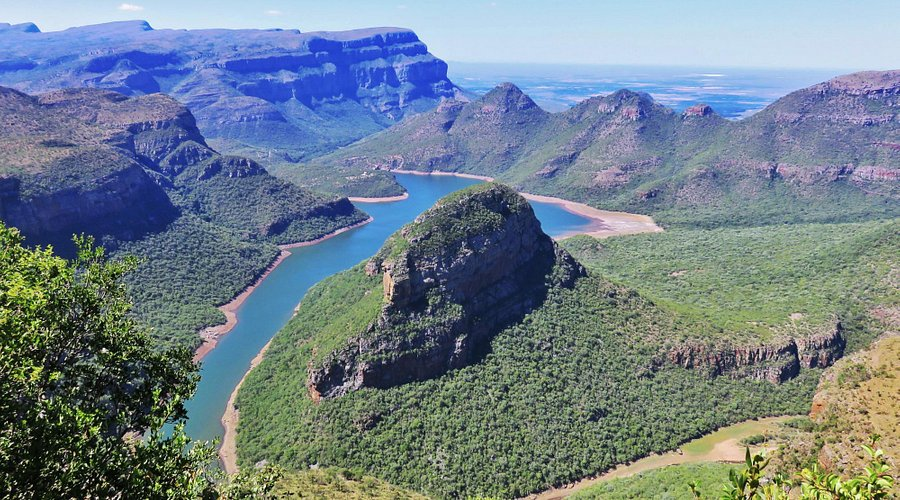
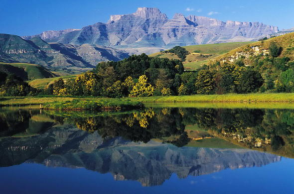

Explore South Africa’s Natural Landmarks
Beyond the major cities, South Africa offers breathtaking natural wonders. The Blyde River Canyon is one of the largest green canyons in the world, with dramatic cliffs and rivers.
The Drakensberg Mountains provide stunning hiking trails and scenic views, while the Cradle of Humankind offers a glimpse into ancient human history with its fossil sites and caves.